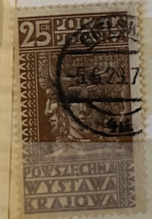
| SOURCE | TITLE| IMAGE MATCH | click to source page |
| www.ebay.com | Poland Agriculture Expo Poznan Slav God stamp 1928 PL | eBay | 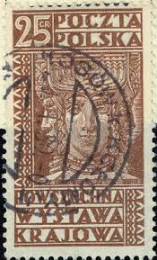 |
| www.mysticstamp.com | 261 - 1928 Poland - Mystic Stamp Company | 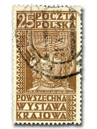 |
| www.ebay.com | Travelstamps: 1928 Poland Stamps Scott #261 Poznan ... | 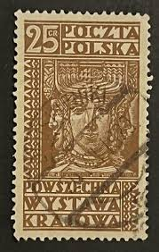 |
| www.ebay.com | Poland.Scott # 261 - 1928 - ' Swiatowid Ancient Slav God ... | 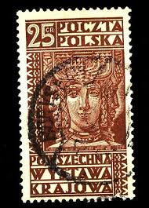 |
| www.shutterstock.com | Poland Circa 1928 Cancelled Postage Stamp Stock Photo ... | 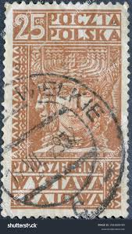 |
| www.hipstamp.com | Poland 261 (used) 25g Svetovid (Świętowit), ancient Slav god ... | 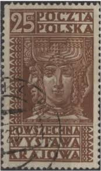 |
| www.ebid.net | POLAND, Swiatowit, Four-faced God, brown 1929, 25 Gr on eBid ... | 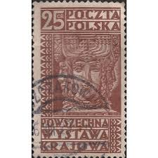 |
| www.alamy.com | Poznan postage stamp poland Cut Out Stock Images ... | 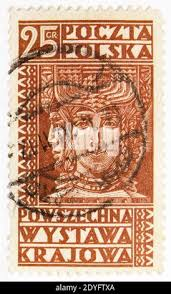 |
| www.etsy.com | National Poznan Fair, Poland 1928, Used. - Etsy UK | 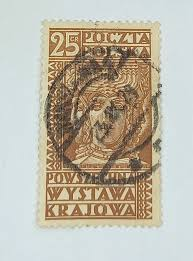 |
| www.ebay.com | Used. 25GR Brown " AGRICULTURAL EXPOSITION " Poland 1928 | eBay | 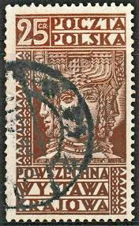 |
| www.kitantik.com | Polonya Pulu (ws2134) - Efemera - kitantik | #13432601000028 | 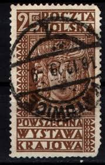 |
| www.collectorbazar.com | a2zKollection ~ Poland Zbruch Idol - National Exhibition Old ... | 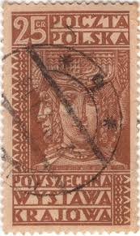 |
| www.shutterstock.com | 25 Swiatowid Royalty-Free Images, Stock Photos & Pictures ... | 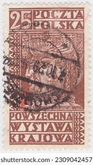 |
| www.postbeeld.com | Stamps from Poland - PostBeeld - Online Stamp Shop - Collecting | 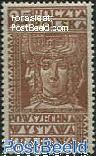 |
| www.kitantik.com | 1928 POLONYA POZNAN ULUSAL SERGİ TAM SERİ DAMGALI - Efemera ... | 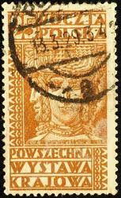 |
| allegro.pl | Fi 241 ** - Polskie znaczki 1920-1929 - Allegro.pl. Więcej ... | 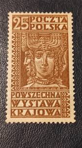 |
| www.osta.ee | Poola " POZNANI NÄITUS " 1928 (247581238) - Osta.ee | 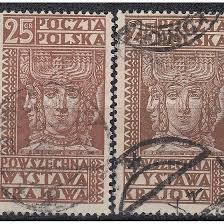 |
| en.todocoleccion.net | polonia 1928 - mitologia, agricultura - exposic - Buy Antique ... | 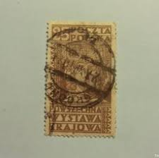 |
| aukro.cz | POLSKO, 1986. Poklady Polska, MiNr.3038-3041, kompl. / B-631 ... | 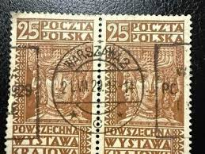 |
| www.researchgate.net | Evidential postage stamp. | Download Scientific Diagram | 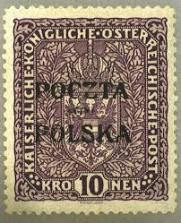 |
| www.dreamstime.com | Charles IV editorial image. Image of face, crown, historic ... | 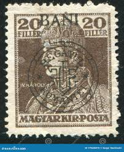 |
| oldthing.de | hc000.376 Polen Mi.Nr. 260 o.. | Briefmarken günstig | 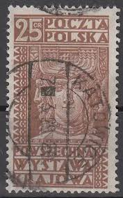 |
| www.etsy.com | 1955 Coin of Syracuse Repvbblica Italiana 20 Lire Italian ... | 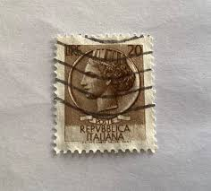 |
| www.osta.ee | Poola 1928,Krakowi mess (207399590) - Osta.ee | 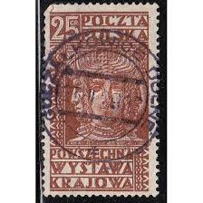 |
| www.mysticstamp.com | Worldwide - Europe - Poland - Page 1 - Mystic Stamp Company | 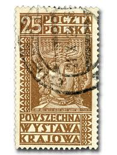 |
| www.collectorbazar.com | a2zkollection ~ Poland 1928 Poznam Agricultural Exhibition ... | 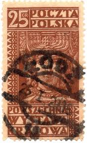 |
| app.biistamp.com | Polish Stamps for Sale - Standard Price List | Bieniecki ... | 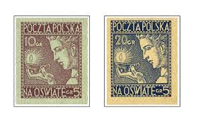 |
| www.alamy.com | Stamp exhibitions series hi-res stock photography and images ... | 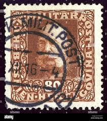 |
| www.youtube.com | Polish Stamps Ep1 - Early Stamps Including Inflations ... |  |
| www.allstamp.net | GE 73 50 pf. Germania: Allstamp.net | 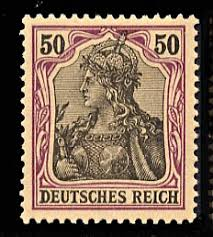 |
| www.reddit.com | The Postage Stamps of the Austro-Hungarian Empire! Wanted ... | 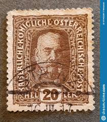 |
| www.tradera.com | 1928 Poland Stamps Scott Poznan Agricultural Ex.. | Köp på ... | 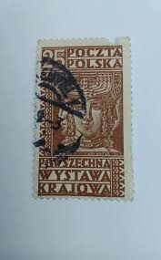 |
| www.pinterest.com | Discover 8 Germania and postal stamps ideas | germany, post ... | 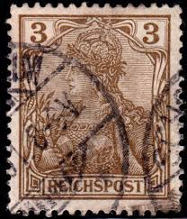 |
| www.kitantik.com | POLONYA İNANÇ , SWIATOWIT HEYKELİ 1928 - DAMGALI - Efemera ... | 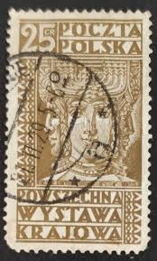 |
| worldstampsproject.org | Varieties of Polish postage stamps 1918-1939 – World Stamps ... | 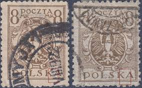 |
| www.forbes.com | The Investment Returns From Stamps - Part 1 | 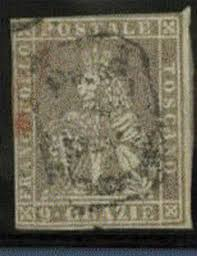 |
| en.wikipedia.org | Germania (stamp) - Wikipedia | 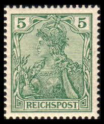 |
| www.youtube.com | Siegel auction Posta Ceskoslovenska 1919, June 2024 by ... |  |
| www.hipstamp.com | Czechoslovakia 1919 Hradcany 25h imperf proof block of 4 ... | 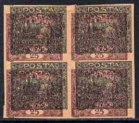 |
| findyourstampsvalue.com | Eagle and Fasces, Symbolical of United Poland: Type of 1919 ... | 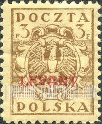 |
| stampforgeries.com | Stamp forgeries of Madagascar | Stampforgeries of the World | 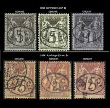 |
| polonus.org | Introduction to Polish Philately | Polonus | 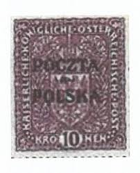 |
| www.burda-auction.com | Complete auction / Philately / Public Auction 71 | Burda ... | 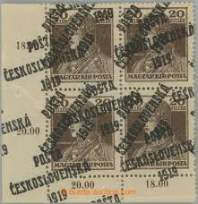 |
| spcstamps.com | SPC stamps by Paolo Cardillo – SPC Stamps | 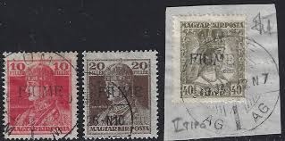 |
| www.austrianstamps.co.uk | Austrian Stamps - Newspaper Stamps | 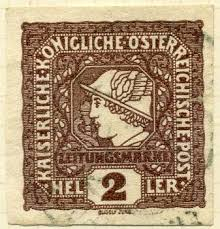 |
| www.ebay.com | Polen MiNr. 260 gestempelt (Ai 196) | eBay | 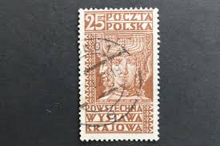 |
| www.muchafoundation.org | Mucha Foundation | 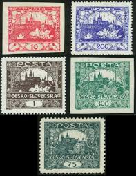 |
| www.germanstamps.net | Petschili Issues – Germania | GermanStamps.net | 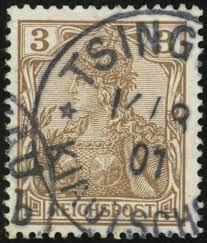 |
| en.wikipedia.org | Newspaper stamp - Wikipedia | 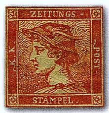 |
| www.linns.com | Stamp Identifier: 1920 Eastern Silesia | 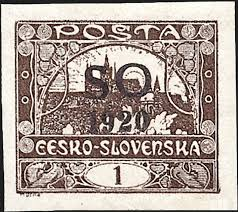 |
| www.facebook.com | What is the value of Italian stamps with watermark stars? | 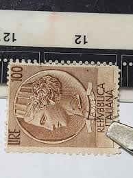 |
| www.allnumis.com | 3 Halerze 1919 - Eagle on a baroque shield, Misc - Poland ... | |
| www.paulfrasercollectibles.com | France Ceres Issue 1fr stamp auctions for $75,000 with Siegel | |
| picryl.com | 10 1919 stamps of poland Images: PICRYL - Public Domain ... | |
| www.cherrystoneauctions.com | U.S. & Worldwide Stamps; The Kaunas Collection Lithuania ... | |
| www.mentalfloss.com | 11 Stamps From Countries That No Longer Exist | |
| www.stampcommunity.org | Poland Stamps Overprinted P.p.c. Identification Help - Stamp ... | |
| www.dreamstime.com | Poznan Agricultural Exhibition, Circa 1928 Editorial ... | |
| library.brown.edu | StampEx019md.jpg | |
| findyourstampsvalue.com | POSTAGE DUE STAMPS - Hradcany at Prague: Surcharged with New ... |